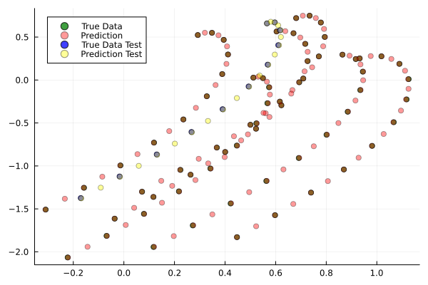
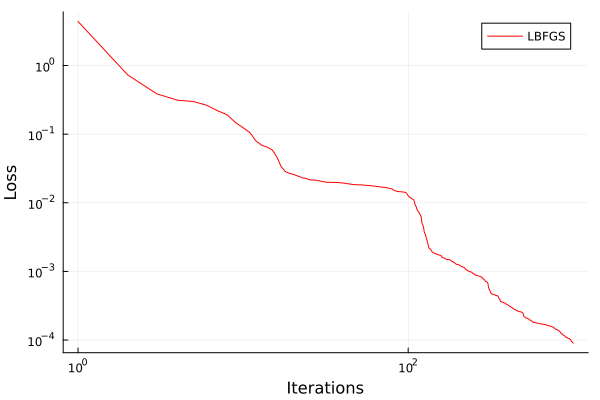
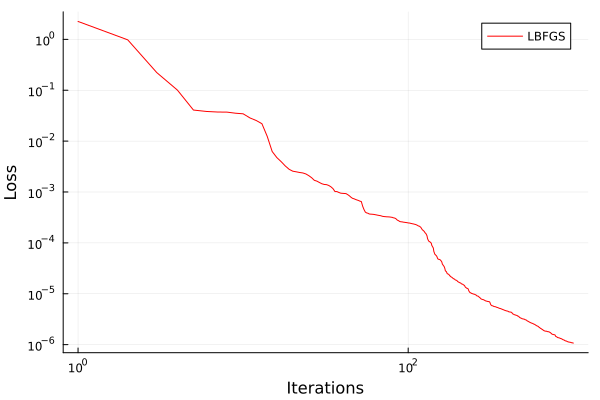

Scientific Machine Learning¶
Questions
What is the SciML Julia package and how to use it?
How can I mix physical pre-knowledge and data to solve modelling problems in Julia?
Instructor note
35 min teaching
15 min exercises
Callout
The code in this lesson is written for Julia v1.12.6.
A modelling problem¶
In this session we will have a look at a physical modelling problem and investigate how Machine Learning can be used in combination with classical modelling techniques.
Background on neural networks and scientific machine learning can be found
here download slides.
Consider a spherical object moving in a viscous fluid under the influence of drag along side other forces. We will consider this problem in 2 dimensions. The code below is adapted from the Missing Physics example included in the SciML documentation.
using LinearAlgebra, Statistics, Random
using ComponentArrays, Lux, Zygote, Plots
using OrdinaryDiffEq, ModelingToolkit, DataDrivenDiffEq, SciMLSensitivity, DataDrivenSparse
using Optimization, OptimizationOptimisers, OptimizationOptimJL, LineSearches
# random number generator
rng = Random.default_rng()
function dynamics!(du, u, p, t)
# mass is 1.0 unit
g = 10.0
# u[1] = x'
# u[2] = x
# u[3] = y'
# u[4] = y
# drag force, gravity and Lorentz force
du[1] = -((u[1]^2 + u[3]^2)^0.5)*u[1] + 2*u[3]
du[3] = -((u[1]^2 + u[3]^2)^0.5)*u[3] - g - 2*u[1]
# reduce to 1st order ODE system
du[2] = u[1]
du[4] = u[3]
end
tspan = (0.0, 1.0)
# sc = 1.0
deltat = 0.01
# u0 = sc * rand(4)
inits_g = [rand(4) for ii in range(1,1)]
# prob = ODEProblem(dynamics!, u0, tspan)
prbs = [ODEProblem(dynamics!, ui, tspan) for ui in inits_g]
times = Vector(0:deltat:1.0)
sols = [Array(solve(prb, Vern7(), abstol = 1e-12, reltol = 1e-12, saveat = deltat)) for prb in prbs]
Xs = hcat(sols...)
# for axis equal; aspect_ratio = :equal
scatter(Xs[2,:], Xs[4,:], alpha = 0.75, color = :green, label = "True Data")

Solution to an initial value problem.¶
The object experiences a drag force which scales as the speed squared, and a constant gravitational pull. To illustrate the learning of missing physics, we have added a Lorentz force experienced by a charged particle under a constant magnetic field pointing in the z-direction.
# mass is 1.0 unit
# gravitational acceleration
g = 10.0
# drag force, gravity and Lorentz force
du[1] = -((u[1]^2 + u[3]^2)^0.5)*u[1] + 2*u[3]
du[3] = -((u[1]^2 + u[3]^2)^0.5)*u[3] - g - 2*u[1]
First consider an almost black box UDE (Universal Differential Equation) where we model the whole right-hand side of the equation system by a neural network. The model is helped by assumed prior knowledge of homogeneity and time-invariance. Time-invariance means here that the forces acting on the object depends only on its position and velocity and not explicitly on time. Homogeneity means here that the forces acting on the object actually only depend on its velocity, not its position.
using LinearAlgebra, Statistics, Random
using ComponentArrays, Lux, Zygote, Plots
using OrdinaryDiffEq, ModelingToolkit, DataDrivenDiffEq, SciMLSensitivity, DataDrivenSparse
using Optimization, OptimizationOptimisers, OptimizationOptimJL, LineSearches
# random number generator
rng = Random.default_rng()
function dynamics!(du, u, p, t)
# mass is 1.0 unit
g = 10.0
# u[1] = x'
# u[2] = x
# u[3] = y'
# u[4] = y
# drag force, gravity and Lorentz force
du[1] = -((u[1]^2 + u[3]^2)^0.5)*u[1] + 2*u[3]
du[3] = -((u[1]^2 + u[3]^2)^0.5)*u[3] - g - 2*u[1]
# reduce to 1st order ODE system
du[2] = u[1]
du[4] = u[3]
end
tspan = (0.0, 1.0)
# sc = 1.0
deltat = 0.1
# u0 = sc * rand(4)
inits_g = [rand(4) for ii in range(1,1)]
# prob = ODEProblem(dynamics!, u0, tspan)
prbs = [ODEProblem(dynamics!, ui, tspan) for ui in inits_g]
times = Vector(0:deltat:1.0)
sols = [Array(solve(prb, Vern7(), abstol = 1e-12, reltol = 1e-12, saveat = deltat)) for prb in prbs]
Xs = hcat(sols...)
# for axis equal; aspect_ratio = :equal
# scatter(Xs[2,:], Xs[4,:], alpha = 0.75, color = :green, label = "True Data")
# savefig("solutions_1.png")
# define our activation function, radial basis function
rbf(x) = exp.(-(x .^ 2))
# the neural network
const U = Lux.Chain(Lux.Dense(2, 5, rbf), Lux.Dense(5, 5, rbf), Lux.Dense(5, 5, rbf),
Lux.Dense(5, 2))
# Get the initial parameters and state variables of the model
p, st = Lux.setup(rng, U)
const _st = st
function ude_dynamics!(du, u, p, t)
û = U(u[[1,3],:], p, _st)[1]
# black box
du[1] = û[1]
du[3] = û[2]
# model with more structure
###du[1] = -((u[1]^2 + u[3]^2)^0.5)*u[1] + û[1]
###du[3] = -((u[1]^2 + u[3]^2)^0.5)*u[3] + û[2]
# reduce to 1st order ODE system
du[2] = u[1]
du[4] = u[3]
end
problems = [ODEProblem(ude_dynamics!, ui, tspan, p) for ui in inits_g]
function predict(θ, inits = inits_g, T = times)
_probs = [remake(problems[ii], u0 = inits[ii], tspan = (T[1], T[end]), p = θ)
for ii in range(1,size(inits)[1])]
allsols = [Array(solve(_prob,
Vern7(),
saveat = T,
abstol = 1e-6,
reltol = 1e-6,
sensealg = QuadratureAdjoint(autojacvec = ReverseDiffVJP(true))))
for _prob in _probs]
hcat(allsols...)
end
function loss(θ)
X̂ = predict(θ)
mean(abs2, Xs .- X̂)
end
losses = Float64[]
callback = function (state, l)
push!(losses, l)
if length(losses) % 50 == 0
println("Current loss after $(length(losses)) iterations: $(losses[end])")
end
return false
end
adtype = Optimization.AutoZygote()
optf = Optimization.OptimizationFunction((w,params) -> loss(w), adtype)
optprob = Optimization.OptimizationProblem(optf, ComponentVector{Float64}(p))
# epochs = 250
epochs = 1000
res = Optimization.solve(
optprob, LBFGS(linesearch = BackTracking()), callback = callback, maxiters = epochs)
println("Final training loss after $(length(losses)) iterations: $(losses[end])")
p_trained = res.u
plt = plot(1:length(losses), losses[1:end], yaxis = :log10, xaxis = :log10,
xlabel = "Iterations", ylabel = "Loss", label = "LBFGS", color = :red)
display(plt)
ts = first(times):(mean(diff(times)) / 2):last(times)
X̂ = predict(p_trained, inits_g, ts)
scatter(Xs[2,:], Xs[4,:], alpha = 0.75, color = :green, label = "True Data")
scatter!(X̂[2,:], X̂[4,:], alpha = 0.4, color = :red, label = "Prediction")
u_test = rand(4)
X̂_test = predict(p_trained, [u_test], ts)
prob_test = ODEProblem(dynamics!, u_test, tspan)
solution_test = solve(prob_test, Vern7(), abstol = 1e-12, reltol = 1e-12, saveat = deltat)
Xs_test = Array(solution_test)
scatter!(Xs_test[2,:], Xs_test[4,:], alpha = 0.75, color = :blue, label = "True Data Test")
#scatter(Xs_test[2,:], Xs_test[4,:], alpha = 0.75, color = :blue, label = "True Data Test")
scatter!(X̂_test[2,:], X̂_test[4,:], alpha = 0.4, color = :yellow, label = "Prediction Test")
# savefig("solutions_2.png")
At the end of the script, we plot the true data and model prediction on the trajectory that was used as training data, as well as a test trajectory with random initial values.

One training and one test trajectory with their corresponding predictions.¶
The predictions on the training trajectory are accurate but the predictions on the test trajectory are not very good. This is not too unexpected since we are only training the model on a single initial condition. Let’s see what happens when we train the model on trajectories from 6 randomly generated initial conditions instead.
# inits_g = [rand(4) for ii in range(1,1)]
inits_g = [rand(4) for ii in range(1,6)]

Training on 6 trajectories. Prediction on test trajectory is quite good in this case.¶
It takes the black box UDE about 1000 epochs to get a good result.

Training loss on the black box UDE model.¶
Now consider the case where, as an example, the drag force is known but not the rest of the dynamics. This means that the neural network has to learn for instance the Lorentz force from data. A model that uses partial pre-knowledge and learns the rest from data is called a hybrid model. To implement this, we make the following change in the function defining the UDE dynamics: explicitly encode the drag force and let the neural network take care of the rest, that is the other terms on the right-hand side of the system of equations.
function ude_dynamics!(du, u, p, t)
û = U(u[[1,3],:], p, _st)[1]
# black box
###du[1] = û[1]
###du[3] = û[2]
# model with more structure
du[1] = -((u[1]^2 + u[3]^2)^0.5)*u[1] + û[1]
du[3] = -((u[1]^2 + u[3]^2)^0.5)*u[3] + û[2]
du[2] = u[1]
du[4] = u[3]
end
In this case we get similar results but much quicker.

Training loss on the hybrid model.¶
Not assuming homogeneity
In the dynamics example above, what happens if you do not assume homogeneity? In other words, if the forces acting on the object are allowed to depend both the object’s velocity and position, as would be the case if for example the magnetic field was non-homogeneous. Try running the code under such weaker assumptions.
Modifications
You can change the definition of the UDE dynamics by letting the neural network that models the dynamics depend on both position and velocity:
function ude_dynamics!(du, u, p, t)
# û = U(u[[1,3],:], p, _st)[1]
û = U(u, p, _st)[1] # U depends on the whole u
# black box
du[1] = û[1]
du[3] = û[2]
# model with more structure
###du[1] = -((u[1]^2 + u[3]^2)^0.5)*u[1] + û[1]
###du[3] = -((u[1]^2 + u[3]^2)^0.5)*u[3] + û[2]
# reduce to 1st order ODE system
du[2] = u[1]
du[4] = u[3]
end
You also have to make sure that the neural network has 4 input nodes rather than just 2:
#const U = Lux.Chain(Lux.Dense(2, 5, rbf), Lux.Dense(5, 5, rbf), Lux.Dense(5, 5, rbf),
# Lux.Dense(5, 2))
const U = Lux.Chain(Lux.Dense(4, 5, rbf), Lux.Dense(5, 5, rbf), Lux.Dense(5, 5, rbf),
Lux.Dense(5, 2))
Typically you need more data to get similar results compared to the case where we assume homogeneity.
If you get issues with renaming \(U\) since you already ran the code with the original definition, you can restart the REPL or introduce another neural network \(V\) and replace \(U\) where needed.
The neural network
Experiment with other architecture of the neural network in the above example. How small (in terms of number of parameters) can it be and still perform well? Is the convergence rate slower or faster when the number of parameter increases or decreases? You can also try other activation functions and see how the model performs (tanh, ReLU, GELU, etc.).